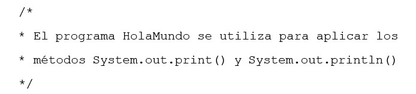
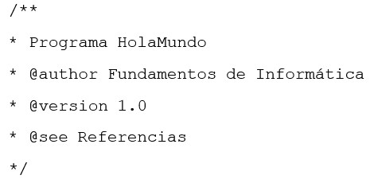
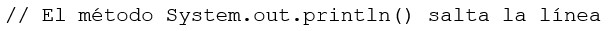

CURSO JAVA

HOLA MUNDO (Estructura de un programa Java)
Un programa describe cómo un ordenador debe interpretar las órdenes del programador para que ejecute y realice las instrucciones dadas tal como están escritas. Un programador utiliza los elementos que ofrece un lenguaje de programación para diseñar programas que resuelvan problemas concretos o realicen acciones bien definidas.
El siguiente programa Java muestra un mensaje en la consola con el texto “Hola Mundo”.
En este programa se pueden identificar los siguientes elementos del lenguaje Java:
⚫Comentario: El programa comienza con un comentario. El delimitador de inicio de un comentario es /* y el delimitador de fin de comentario es */. El texto del primer comentario de este ejemplo sería: ‘Este programa escribe el texto “Hola Mundo” en la consola utilizando el método System.out.println()'. Los comentarios son ignorados por el compilador y solo son útiles para el programador. Los comentarios ayudan a explicar aspectos relevantes de un programa y lo hacen más legible. En un comentario se puede escribir todo lo que se desee, el texto puede ser de una o más líneas.
⚫Definición de clase. La primera línea del programa, después del primer comentario. Define una clase que se llama HolaMundo. La definición de la clase comienza por el carácter { y termina con el carácter }. El nombre de la clase lo define el programador.
⚫Definición de método. Después de la definición de clase se escribe la definición del método main(). Todos los programas Java deben incluir un método main(). Este método indica las sentencias a realizar cuando se ejecuta un programa. Un método es una secuencia de sentencias ejecutables. Las sentencias de un método quedan delimitadas por los caracteres "{" y "}" que indican el inicio y el fin del método, respectivamente.
⚫Sentencia. Dentro del método main() se incluye una sentencia para mostrar un texto por la consola. Los textos siempre se escriben entre comillas dobles para diferenciarlos de otros elementos del lenguaje. Todas las sentencias de un programa Java deben terminar con el símbolo punto y coma. Este símbolo indica al compilador que ha finalizado una sentencia.
Una vez que el programa se ha editado, es necesario compilarlo y ejecutarlo para comprobar si es correcto. Al finalizar el proceso de compilación, el compilador indica si hay errores en el código Java, dónde se encuentran y el tipo de error que ha detectado: léxico, sintáctico o semántico.
Los elementos de un programa Java
Comentarios
En un programa Java hay tres tipos de comentarios.
Comentario de bloque. Empieza por /* y termina por */. El compilador ignora todo el texto contenido dentro del comentario.

Comentario de documentación. Empieza por /** y termina por */. Java dispone de la herramienta javadoc para documentar automáticamente los programas. En un comentario de documentación normalmente se indica el autor y la versión del software.

Comentario de línea. Empieza con //. El comentario comienza con estos caracteres y termina al final de la línea.

El uso de comentarios hace más claro y legible un programa. En los comentarios se debe decir qué se hace, para qué y cuál es el fin de nuestro programa. Conviene utilizar comentarios siempre que merezca la pena hacer una aclaración sobre el programa.
Identificadores
El programador tiene libertad para elegir el nombre de las variables, los métodos y de otros elementos de un programa. Existen reglas muy estrictas sobre los nombres que se utilizan como identificadores de clases, de variables o de métodos. Todo identificador debe empezar con una letra que puede estar seguida de más letras o dígitos. Una letra es cualquier símbolo del alfabeto y el carácter ‘_’. Un dígito es cualquier carácter entre ‘0’ y ‘9’.
Existen unas normas básicas para los identificadores que se deben respetar
⚫ Los nombres de variables y métodos empiezan con minúsculas. Si se trata de un nombre compuesto cada palabra debe empezar con mayúscula y no se debe utilizar el guión bajo para separar las palabras. Por ejemplo, los identificadores calcularSueldo, setNombre o getNombre son válidos.
⚫ Los nombres de clases empiezan siempre con mayúsculas. En los nombres compuestos, cada palabra comienza con mayúscula y no se debe utilizar el guión bajo para separar las palabras. Por ejemplo, HolaMundo, PerimetroCircunferencia, Alumno o Profesor son nombres válidos.
⚫ Los nombres de constantes se escriben en mayúsculas. Para nombres compuestos se utiliza el guión bajo para separar las palabras. Por ejemplo, PI, MINIMO, MAXIMO o TOTAL_ELEMENTOS son nombres válidos.
Variables y valores
Un programa Java utiliza variables para almacenar valores, realizar cálculos, modificar los valores almacenados, mostrarlos por la consola, almacenarlos en disco, enviarlos por la red, etc. Una variable almacena un único valor.
Una variable se define por un nombre, un tipo y el rango de valores que puede almacenar.
El nombre de una variable permite hacer referencia a ella. Este nombre debe cumplir las reglas aplicables a los identificadores. El tipo indica el formato de los valores que puede almacenar la variable: cadenas de caracteres, valores lógicos, números enteros, números reales o tipos de datos complejos. El rango indica los valores que puede tomar la variable.
Por ejemplo, una variable de tipo número entero, con nombre mesNacimiento puede almacenar valores positivos y negativos, lo que no tiene sentido cuando se trata de meses del año. El rango válido para esta variable sería de 1 a 12.
Para declarar una variable en Java se indica el tipo y su nombre.
int mesNacimiento;
En este ejemplo se indica que la variable es de tipo entero (int) y su nombre es mesNacimiento. Una vez declarada una variable, se puede utilizar en cualquier parte del programa referenciándola por su nombre. Para almacenar un valor en una variable se utiliza el operador de asignación y a continuación se indica el valor, por ejemplo 2.
mesNacimiento = 2;
A partir de este momento la variable mesNacimiento almacena el valor 2 y cualquier referencia a ella utiliza este valor. Por ejemplo, si se imprime el valor de la variable por la consola, muestra el valor 2.
System.out.print(mesNacimiento);
Contenido multimedia